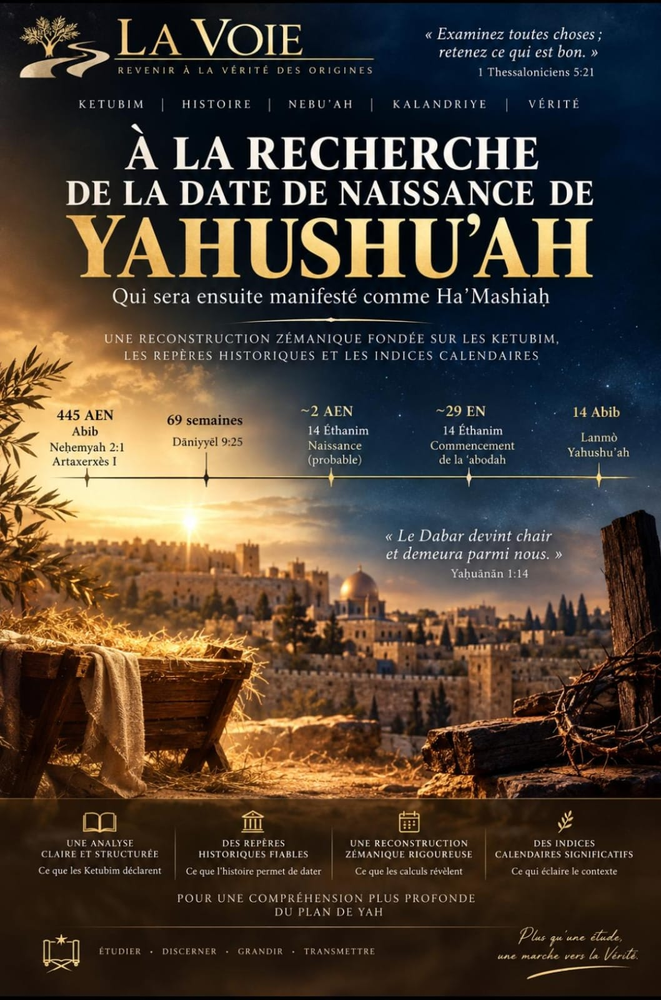

Qui sera ensuite manifesté comme Ha'Mashiaḥ — une reconstruction zémanique fondée sur les Ketubim, les repères historiques et le kalandriye
Yeshaʿeyah 58:12 · Neḥemyah 2:1 · Dāniyyēʾl 9:24-27 · Louqas 3:1-23
« Les tiens rebâtiront sur d'anciennes ruines ; tu relèveras des fondements posés dès les générations passées ; on t'appellera réparateur des brèches, restaurateur des sentiers, pour rendre le pays habitable. » Yeshaʿeyah 58:12
La Voie ne se constitue pas en critique des Ketubim Qadoshim. Son travail n'est pas de juger le texte, mais de le restaurer : regarder ce qui a été ajouté, ce qui a été retranché au fil des traditions et des traductions, et rendre le Dabar tel que Yahawah l'a donné.
La même démarche s'applique ici à la reconstitution de la date possible de naissance du Moshiaḥ, Yahushuʿah Ha'Mashiaḥ. Ce document ne prétend pas trancher un débat exégétique. Il présente la reconstruction que La Voie retient, avec les repères kétoubiques sur lesquels elle s'appuie, l'ancrage historique qu'elle adopte, et le raisonnement zémanique qui en découle.
La recherche de la date ne porte pas sur la naissance d'un enfant ordinaire. Le récit de Louqas décrit un événement entouré de manifestations exceptionnelles et dont la portée avait été annoncée longtemps auparavant.
Des bergers se trouvent dehors avec leurs troupeaux. Un malʾakh leur apparaît ; le kabod de Yahawah les enveloppe de lumière et ils sont saisis d'une grande crainte. Le malʾakh leur annonce alors « une grande joie qui sera pour tout le peuple » : un enfant vient de naître. Un signe précis leur est donné pour le reconnaître. Puis apparaît avec le malʾakh une multitude de l'armée des shamayim, qui loue ʾÈlohim. Les bergers se rendent ensuite sur place, trouvent l'enfant conformément au signe et rapportent ce qui leur avait été annoncé.
Récit complet de la nuit et du signe donné aux bergers. Louqas 2:8-20
L'annonce ne se limite pas à signaler une naissance. Louqas 2:11 identifie l'enfant comme celui qui devait exercer une fonction déterminante pour le peuple. Plus tôt, le malʾakh avait annoncé à Miryam qu'il serait grand, qu'il recevrait le trône de Dāwīd, qu'il régnerait sur la maison de Yaʿaqob et que son Malkuwt n'aurait pas de fin.
L'annonce faite à Miryam concernant l'enfant à naître. Louqas 1:30-33
Cette annonce trouve une correspondance remarquable avec Yeshaʿeyah :
« Un enfant nous est né, un fils nous a été donné » ; la domination repose sur son épaule, et l'accroissement de sa domination ainsi que l'établissement de son règne sur le trône de Dāwīd sont annoncés. Yeshaʿeyah 9:6-7
Ainsi, Yeshaʿeyah 9:6-7 → Louqas 1:30-33 → Louqas 2:8-14 forment une continuité à examiner : l'enfant annoncé → l'enfant promis à la royauté → l'enfant effectivement né.
La question devient légitime : si Yahawah avait fait annoncer cette naissance, si un malʾakh en avait donné le signe, si une multitude de l'armée des shamayim avait accompagné l'annonce, si les bergers avaient été conduits à constater l'événement, et si les Nebiʾim avaient auparavant annoncé l'identité et la fonction de cet enfant, les Ketubim ont-ils également laissé suffisamment de repères pour situer le moment de sa naissance ?
C'est précisément ce que le tableau zémanique cherchera à examiner.
Louqas ne présente pas la naissance comme un événement dépourvu de circonstances vérifiables. Le malʾakh donne aux bergers un signe précis : ils trouveront le nouveau-né enveloppé et couché dans une mangeoire (Louqas 2:8-12). Le récit ajoute les bergers dans les champs durant la nuit, l'annonce d'une « grande joie », puis leur déplacement pour constater le signe (Louqas 2:13-20). Le signe donné par le malʾakh sert donc à identifier l'enfant, même s'il ne constitue pas à lui seul un calendrier permettant de déterminer le mois.
Les Ketubim eux-mêmes en fournissent la preuve. En 1 Qorintiyim 5:9, Šāʾūl mentionne une lettre qu'il avait déjà adressée aux Qorintiyim. Cette lettre antérieure n'est pas conservée dans ce que nous appelons aujourd'hui 1 Qorintiyim ; les travaux de référence la considèrent généralement comme perdue.
Cela établit un principe important : l'absence d'un renseignement dans les documents qui nous sont parvenus ne démontre pas qu'aucun écrit ancien ne l'ait jamais contenu. En revanche, nous ne pouvons pas affirmer qu'un document perdu donnait effectivement la date de naissance de Yahushuʿah sans preuve documentaire.
La date du 25 décembre appartient à une tradition postérieure aux récits du Ier siècle. Sa plus ancienne attestation écrite connue se trouve dans le Chronographe de 354 (calendrier philocalien, rédigé à Rome), qui note au 25 décembre : « Natus Christus in Betleem Iudeae » — cette entrée reflétant vraisemblablement un usage romain déjà établi vers 336 EN. Avant cela, Sextus Julius Africanus (c. 180-250 EN) est le premier auteur connu à avancer ce jour, par un calcul : il situait l'Annonciation au 25 mars, et en comptait neuf mois de gestation jusqu'au 25 décembre.
Un siècle et demi plus tôt, Clément d'Alexandrie (Stromates I.21, c. 194 EN) recensait déjà plusieurs dates avancées par différents groupes pour la naissance ou la Pesiḥah de Yahushuʿah — le 25 Pachon (20 mai), le 24 ou 25 Pharmuthi (20-21 avril), et pour l'entrée dans le monde selon les Basilidiens, le 11 ou le 15 Tybi (6 ou 10 janvier) — sans mentionner le 25 décembre. Ce désaccord précoce montre qu'il n'existait, à la fin du IIe siècle, aucun consensus reçu depuis les shilliaḥim sur un jour précis. Certaines communautés orientales ont d'ailleurs longtemps conservé le 6 janvier, et l'adoption du 25 décembre en Orient s'est faite progressivement, plus tard, région par région.
La question légitime pour notre étude est donc : le 25 décembre provient-il d'un repère kétoubique concernant la naissance, ou d'un développement ultérieur de la tradition ?
Une autre question mérite examen : des renseignements anciens concernant la date ont-ils été perdus, écartés ou simplement non conservés au cours de la transmission des textes ? Et existe-t-il une preuve historique permettant d'affirmer qu'une date antérieure aurait été volontairement occultée afin de favoriser le 25 décembre ?
Après recherche dans les travaux d'histoire du christianisme ancien disponibles, aucune source historique sérieuse consultée ne démontre une dissimulation volontaire d'une date antérieure connue au profit du 25 décembre. Ce que les sources montrent est différent : une diversité de dates proposées dès le IIe siècle (Clément d'Alexandrie), l'absence de tout repère daté avant Julius Africanus au IIIe siècle, puis l'adoption progressive et régionale du 25 décembre. Deux hypothèses savantes s'affrontent aujourd'hui pour expliquer ce choix : l'« hypothèse du calcul » (le 25 décembre dérivé du 25 mars par un raisonnement théologique de gestation) et l'« hypothèse de l'histoire des religions » (rapprochement avec des fêtes romaines du solstice, dont Sol Invictus) — cette seconde hypothèse étant elle-même jugée fragile par plusieurs spécialistes récents (C. P. E. Nothaft ; S. Hijmans), faute de preuves suffisantes. Aucune des deux ne repose sur la découverte ou la suppression d'un document qui aurait donné une date différente.
La Voie retient donc ceci comme une distinction à maintenir : perte documentaire (attestée, par ex. 1 Qorintiyim 5:9), évolution de tradition (attestée, par ex. Clément puis Julius Africanus puis le Chronographe de 354), choix liturgique (attesté, par ex. le maintien oriental du 6 janvier) — et suppression intentionnelle, qui reste, en l'état des sources consultées, une question ouverte et non une conclusion établie.
Neḥemyah date lui-même sa mission :
« Au mois de Nisan, la vingtième année du roi Artaxerxès… » Neḥemyah 2:1, 5-8
La Voie retient la date historique bien établie de cette 20e année : 445 AEN. C'est le point d'ancrage de tout l'axe zémanique qui suit.
« Depuis la sortie de la parole ordonnant la restauration et la reconstruction de Yarushalayim jusqu'à Mashiaḥ Nagid, il y a sept semaines et soixante-deux semaines. » Dāniyyēʾl 9:24-25
Depuis ce point de départ de 445 AEN, le compte des semaines conduit vers la génération où Mashiaḥ Nagid doit être manifesté — la génération de Louqas 3.
C'est ici que Louqas montre lui-même le soin qu'il apporte à situer les événements dans le temps :
« La quinzième année du règne de Tibère César — Pontius Pilate étant gouverneur de la Yehoudah, Herodès tétrarque de la Galil, Philippos son frère tétrarque de l'Ituréah et de la Trakhonitis, Lysanias tétrarque de l'Abilène, sous les kohanim gedolim Ḥanan et Qayafa… » Louqas 3:1-2
Cinq territoires, leurs dirigeants respectifs, et jusqu'au nom du Kohen Gadol en exercice : ce niveau de précision n'est pas celui d'une indication vague ou symbolique — c'est celui d'un témoin qui ancre son récit dans une année identifiable sans ambiguïté.
La Voie adopte cette 15e année de Tibère comme l'an 29 de notre ère, et reçoit cette précision de Louqas comme un repère fiable, non comme une donnée à discuter.
« Et Yahushuʿah lui-même avait environ trente ans lorsqu'il commença. » Louqas 3:23
De l'an 29 (commencement de la ʿabodah), en remontant d'environ trente ans, la reconstruction zémanique situe la naissance de Yahushuʿah vers l'an 2 AEN.
La Voie retient le 14 Éthanim comme jour de naissance : la veille de l'ouverture de Soukkot.
« Le 15e jour de ce septième mois, ce sera la fête de Soukkot. » Wayyiqra 23:34
Ce rapprochement trouve un écho dans le témoignage de Yaḥuānān :
« Et le Dabar devint chair, et il shakhan — il dressa sa tente, il demeura — parmi nous. » Yaḥuānān 1:14
Yahushuʿah venant demeurer parmi les Siens à la période même où Yisraʾēl dresse ses propres tentes pour Soukkot n'est pas un hasard que La Voie cherche à démontrer par la seule philologie — c'est une cohérence que le texte lui-même donne à voir.
Yahushuʿah rend son néfèsh le 14 Abib, avant le commencement du Shabbat :
« Et Yahushuʿah, poussant un grand cri, rendit le néfèsh. » Marqos 15:33-37, 42
Entre le début de sa ʿabodah (14 Éthanim, an 29) et ce dernier jour (14 Abib), Dāniyyēʾl situe une demi-semaine — trois ans et six mois :
« Il confirmera l'alliance avec plusieurs pour une semaine, et au milieu de la semaine il fera cesser le sacrifice… » Dāniyyēʾl 9:26-27
Abib et Éthanim sont, dans le kalandriye que Yahawah a établi, toujours séparés de six mois exacts. Que le compte de la ʿabodah de Yahushuʿah, du premier au dernier jour, retombe précisément sur ces deux mêmes quantièmes n'est pas un artifice de calcul : c'est la marque d'un ordre voulu, celui-là même que La Voie s'attend à trouver dans le Dabar de Yahawah — un ordre qui ne se contredit pas.
| Repère | Donnée retenue | Source |
|---|---|---|
| Décret de reconstruction | 20e année d'Artaxerxès — 445 AEN | Neḥemyah 2:1, 5-8 |
| Compte des semaines | Jusqu'à Mashiaḥ Nagid | Dāniyyēʾl 9:24-25 |
| Début de la ʿabodah | 15e année de Tibère — an 29 | Louqas 3:1-2, 21-23 |
| Naissance — année | ≈ 30 ans avant l'an 29 | Louqas 3:23 |
| Naissance — jour | 14 Éthanim, veille de Soukkot, ≈ 2 AEN | Wayyiqra 23:34 ; Yaḥuānān 1:14 |
| Néfèsh rendu | 14 Abib | Marqos 15:33-37, 42 |
| Durée de la ʿabodah | 3 ans et 6 mois — une demi-semaine | Dāniyyēʾl 9:26-27 |
✦ Conclusion
La Voie retient le 14 Éthanim, ≈ 2 AEN, comme la date possible de naissance de Yahushuʿah Ha'Mashiaḥ — reconstituée, non inventée ; retenue avec confiance dans le cadre de restauration qui est le sien, non imposée comme un dogme fermé à toute lumière nouvelle que Yahawah voudrait donner par la suite.
Clément d'Alexandrie, Stromates I.21 (c. 194 EN) · Sextus Julius Africanus, Chronographiai (c. 221 EN) · Chronographe de 354 (calendrier philocalien, Rome) · C. Philipp E. Nothaft, sur la fragilité de l'hypothèse « histoire des religions » · Steven Hijmans, « Sol Invictus, the Winter Solstice, and the Origins of Christmas », Mouseion, 2003.